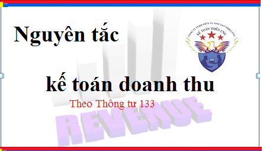

Nguyên tắc kế toán doanh thu theo Thông tư 133. Quy định ghi nhận doanh thu, doanh thu gồm những khoản nào, các khoản không ghi nhận vào doanh thu
Theo điều 56 Thông tư 133/2016/TT-BTC quy định Nguyên tắc kế toán doanh thu cụ thể như sau:
1. Doanh thu là lợi ích kinh tế thu được làm tăng vốn chủ sở hữu của doanh nghiệp trừ phần vốn góp thêm của các cổ đông. Doanh thu được ghi nhận tại thời điểm giao dịch phát sinh, khi chắc chắn thu được lợi ích kinh tế, được xác định theo giá trị hợp lý của các khoản được quyền nhận, không phân biệt đã thu tiền hay sẽ thu được tiền.
2. Doanh thu và chi phí tạo ra khoản doanh thu đó phải được ghi nhận đồng thời theo nguyên tắc phù hợp. Tuy nhiên trong một số trường hợp, nguyên tắc phù hợp có thể xung đột với nguyên tắc thận trọng trong kế toán, thì kế toán phải căn cứ vào bản chất giao dịch để phản ánh một cách trung thực, hợp lý.
- Một hợp đồng kinh tế có thể bao gồm nhiều giao dịch. Kế toán phải nhận biết các giao dịch để áp dụng các điều kiện ghi nhận doanh thu phù hợp.
- Doanh thu phải được ghi nhận phù hợp với bản chất hơn là hình thức hoặc tên gọi của giao dịch và phải được phân bổ theo nghĩa vụ cung ứng hàng hóa, dịch vụ.
+ Ví dụ: Khách hàng chỉ được nhận hàng khuyến mại khi mua sản phẩm hàng hóa của đơn vị (như mua 2 sản phẩm được tặng thêm một sản phẩm) thì bản chất giao dịch là giảm giá hàng bán, sản phẩm tặng miễn phí cho khách hàng về hình thức được gọi là khuyến mại nhưng về bản chất là bán vì khách hàng sẽ không được hưởng nếu không mua sản phẩm. Trường hợp này giá trị sản phẩm tặng cho khách hàng được phản ánh vào giá vốn và doanh thu tương ứng với giá trị hợp lý của sản phẩm đó phải được ghi nhận.
- Đối với các giao dịch làm phát sinh nghĩa vụ của người bán ở thời điểm hiện tại và trong tương lai, doanh thu phải được phân bổ theo giá trị hợp lý của từng nghĩa vụ và được ghi nhận khi nghĩa vụ đã được thực hiện.
3. Doanh thu, lãi hoặc lỗ chỉ được coi là chưa thực hiện nếu doanh nghiệp còn có trách nhiệm thực hiện các nghĩa vụ trong tương lai (trừ nghĩa vụ bảo hành thông thường) và chưa chắc chắn thu được lợi ích kinh tế; Việc phân loại các khoản lãi, lỗ là thực hiện hoặc chưa thực hiện không phụ thuộc vào việc đã phát sinh dòng tiền hay chưa.
- Các khoản lãi, lỗ phát sinh do đánh giá lại tài sản, nợ phải trả không được coi là chưa thực hiện do tại thời điểm đánh giá lại, đơn vị đã có quyền đối với tài sản và đã có nghĩa vụ nợ hiện tại đối với các khoản nợ phải trả, ví dụ: Các khoản lãi, lỗ phát sinh do đánh giá lại tài sản mang đi góp vốn đầu tư vào đơn vị khác, đánh giá lại các tài sản tài chính theo giá trị hợp lý đều được coi là đã thực hiện.
4. Doanh thu không bao gồm các khoản thu hộ bên thứ ba, ví dụ;
- Các loại thuế gián thu (thuế GTGT, thuế xuất khẩu, thuế tiêu thụ đặc biệt, thuế bảo vệ môi trường) phải nộp;
- Số tiền người bán hàng đại lý thu hộ bên chủ hàng do bán hàng đại lý;
- Các khoản phụ thu và phí thu thêm ngoài giá bán đơn vị không được hưởng;
- Các trường hợp khác.
Trường hợp các khoản thuế gián thu phải nộp mà không tách riêng ngay được tại thời điểm phát sinh giao dịch thì để thuận lợi cho công tác kế toán, có thể ghi nhận doanh thu trên sổ kế toán bao gồm cả số thuế gián thu nhưng định kỳ kế toán phải ghi giảm doanh thu đối với số thuế gián thu phải nộp. Tuy nhiên, khi lập Báo cáo tài chính, kế toán bắt buộc phải xác định và loại trừ toàn bộ số thuế gián thu phải nộp ra khỏi các chỉ tiêu phản ánh doanh thu gộp.
5. Thời điểm, căn cứ để ghi nhận doanh thu kế toán và doanh thu tính thuế có thể khác nhau tùy vào từng tình huống cụ thể. Doanh thu tính thuế chỉ được sử dụng để xác định số thuế phải nộp theo quy định của pháp luật; Doanh thu ghi nhận trên sổ kế toán để lập Báo cáo tài chính phải tuân thủ các nguyên tắc kế toán và tùy theo từng trường hợp không nhất thiết phải bằng số đã ghi trên hóa đơn bán hàng.
6. Doanh thu được ghi nhận chỉ bao gồm doanh thu của kỳ báo cáo. Các tài khoản phản ánh doanh thu không có số dư, cuối kỳ kế toán phải kết chuyển doanh thu để xác định kết quả kinh doanh.
Kế toán Diệu Tâm chúc các bạn thành công!
